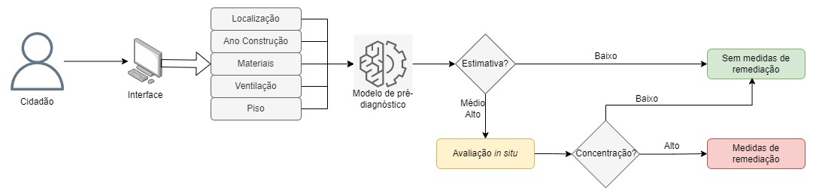

Este modelo de pré-diagnóstico do radão foi criado apartir de dados recolhidos de edifícios que foram avaliados, recolhendo-se as características e efetuado medições durante longos periodos de tempo.
Os resultados do modelo podem não ser precisos, denotando-se que existe alguma imprecisão por parte do modelo. Para ter a certeza do resultado é necessário fazer uma avaliação no local e tomar medidas de mitigação caso seja necessário.
Caso o modelo indique um potencial médio ou alto é recomendado fazer uma avaliação in situ para determinar os níveis de radão reais.

Dados para a avaliação
Os dados necessários para a realização de uma avaliação do potencial do radão são:
A localização aproximada do edifício. Esta localização é utilizada para saber aproximadamente o valor de radiação gama do local, através do mapa radiológico de Portugal.
O ano de construção.
O número de pisos totais do edifício.
Os materiais de construção do piso e paredes. Estes estão divididos em duas partes, o material que compõe a base da construção e o acabamento.
O tipo de ventilação. Esta pode ser natural, que significa que a ventilação do espaço só é feita através de janelas e portas. E mista que para além de janelas e portas existe ainda, algum tipo de ventilação mecânica, como ar condicionado/HVAC/AVAC
Se o edifício sofreu algum recondicionameno térmico, nomeadamente a instalação de janelas com melhores características de isolamento.
O piso da divisão que se predente avaliar.
O número de pisos abaixo dessa divisão.
Avaliação no local
A avaliação no local ou avaliação in situ é efetuada colocando um dispostivo no compartimento a ser avaliação durante um determinado período de tempo.
Os dispositvos de medição podem ser divididos em duas categorias: Ativos e Passivos.
Os dispositivos ativos apresentam o valor medido no momento de utilização, alguns apresentado estes valores como médias de vários dias.
Os dispositivos passivos recolhem a atividade do radão em longos períodos de tempo e requerem serem revelados por processos laboratoriais.
O período mínimo para uma avaliação deverá ser de 2 semanas.